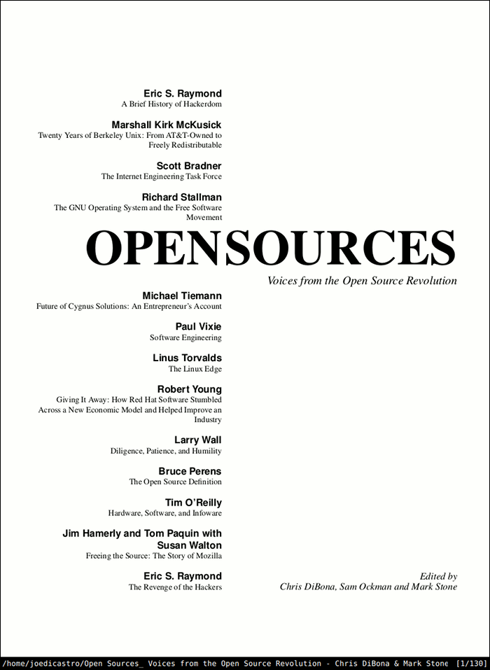
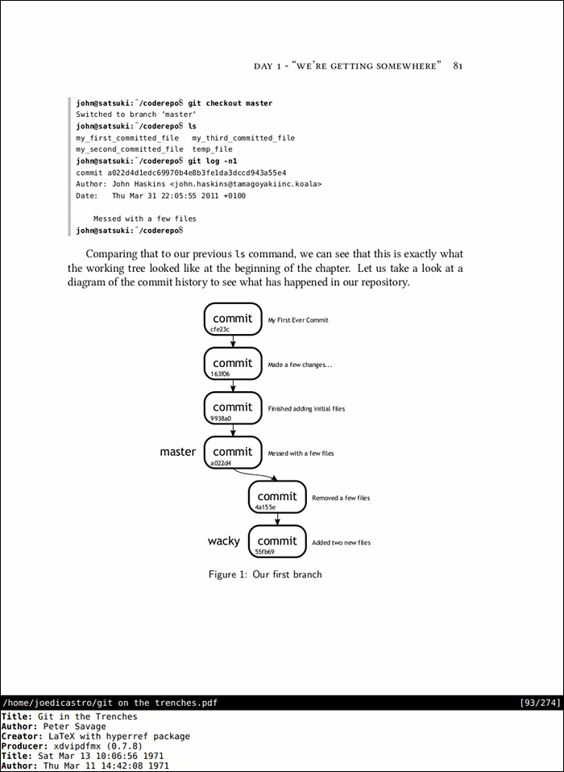
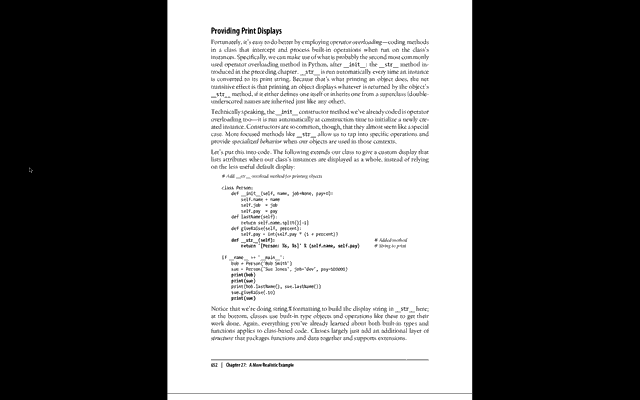

zathura es un programa minimalista que procura seguir el principio de "menos es más" que acuñara Mies van der Rohe en la arquitectura y que en la informática se correspondería con el principio KISS y la filosofía UNIX. Siguiendo esta filosofía, zathura es una aplicación que hace una sola cosa, la hace bien y consume muy pocos recursos. Sus autores, la comunidad PWMT.org (programas con nombre de película), tienen como propósito el crear aplicaciones de software libre que se centren en un interfaz simple, que no malgaste espacio y que se maneje íntegramente desde el teclado.
La aplicación es un visor de documentos, y es modular, por lo que puedes instalar los plugins que quieras en función del formato de documentos que quieras que soporte. Actualmente están disponibles los siguientes plugins:
-
pdf-poppler: Lectura de PDF a través de la famosa librería Poppler, que es empleada por aplicaciones como Evince, Okular o Inkscape.
-
pdf-mupdf: Lectura de PDF mediante la librería mupdf empleada por ejemplo por Sumatra PDF.
-
djvu: Para visionar documentos DJVU. Emplea la librería djvulibre que emplean por ejemplo Evince y Okular.
-
ps: Para poder ver documentos Postscript. Usa la librería libspectre que es utilizada por Evince y Okular.
-
cb: Para poder abrir archivos en formato Comic Book.
Como se puede ver emplea las mismas librerías que emplean la mayoría de programas similares para Linux, por lo tanto nos ofrecen la misma calidad que estos pero con un interfaz minimalista donde el protagonista es el contenido, y proporcionándonos un control absoluto del documento desde el teclado.

El interfaz es simple, una ventana de contenido y una barra de estado/línea de comandos. El control de la misma recae en el teclado (aunque puede usarse el ratón para funciones básicas) y sus atajos están inspirados en los de Vim.
Características
Las características principales de Zathura son las siguientes:
- Interfaz minimalista
- Controlable completamente desde el teclado, inspirado en vim y muy parecido a pentadactyl. Permite seguir enlaces y saltos directos a páginas
- Recarga automática de documentos si estos cambian. Útil para previsualizar la salida en PDF de documentos de LaTeX, por ejemplo
- Permite establecer marcadores y marcadores rápidos dentro de un documento. Muy útil para labores de investigación y documentación
- Exporta imágenes y adjuntos de un documento
- Puede abrir documentos protegidos por contraseña (proporcionándosela, claro)
- Imprime el documento completo o simplemente las hojas que deseemos
- Permite buscar en el documento y desplazarse por los resultados
- Se puede abrir y navegar por el indice del documento
- Muestra la información disponible (metadatos) sobre el documento
- Zoom y Rotar documentos
- Permite cambiar el color del documento. Sirve para visualizar el documento en duotono con los colores invertidos
- Se pueden personalizar los atajos de teclado y los colores empleados
- Se personaliza a través de un fichero de texto plano
En esta imagen se puede apreciar el resultado de aplicar el comando :info
sobre un documento.

El poder cambiar los colores del documento, invirtiéndolos, es una característica muy útil, por ejemplo, para leer largos documentos sin fatigar demasiado nuestra vista. Aquí se puede ver la diferencia entre ver un documento a pantalla completa en modo normal y con los colores invertidos.

Alternativas
No hay demasiadas alternativas a Zathura que tengan un planteamiento parecido, de hecho la única que conozco es apvlv. Aunque para mi no es tan completa como Zathura.
Mi configuración
Aunque mi configuración no tiene nada de particular, está disponible en mis dotfiles alojados en GitHub.
Comentarios !